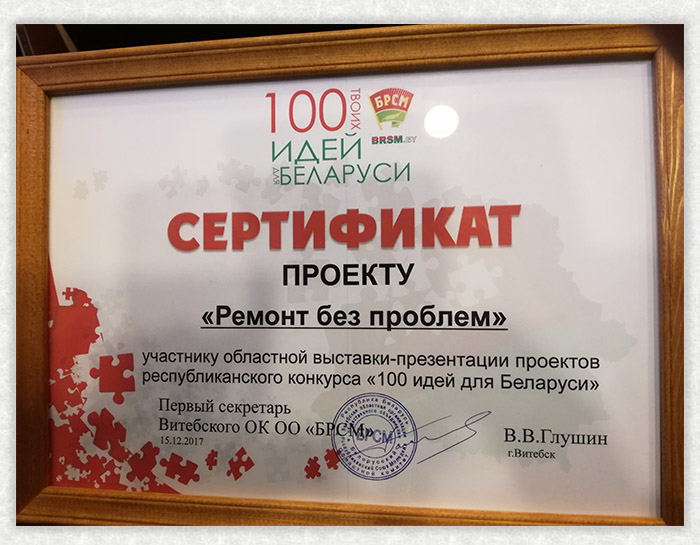
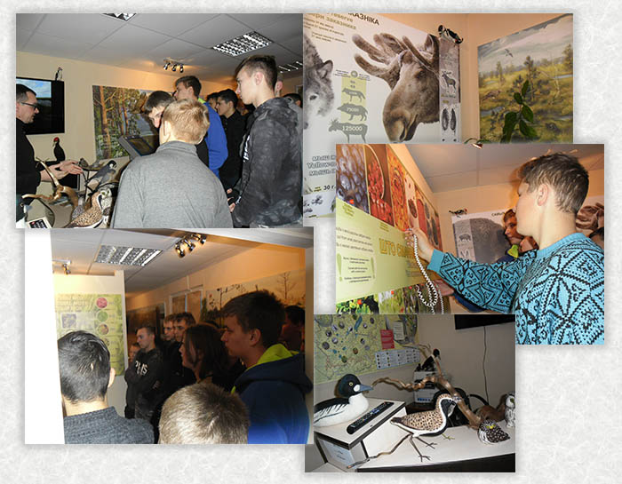
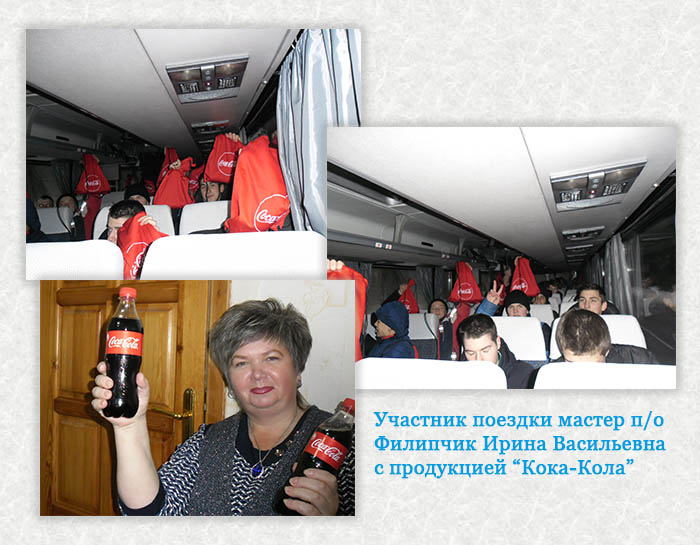
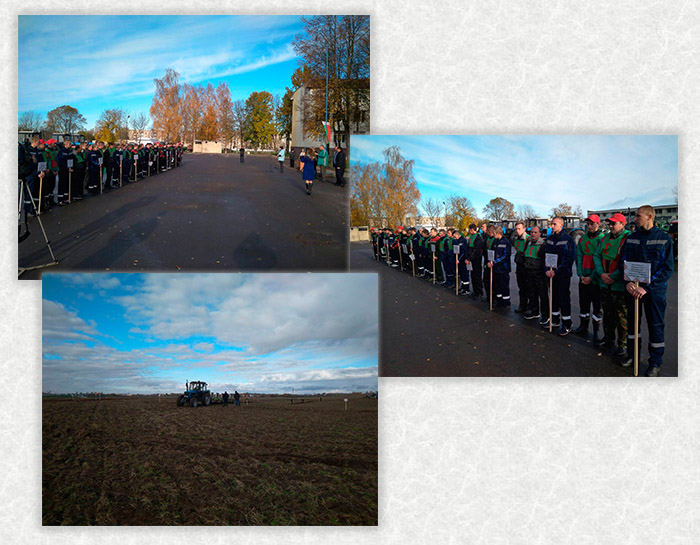
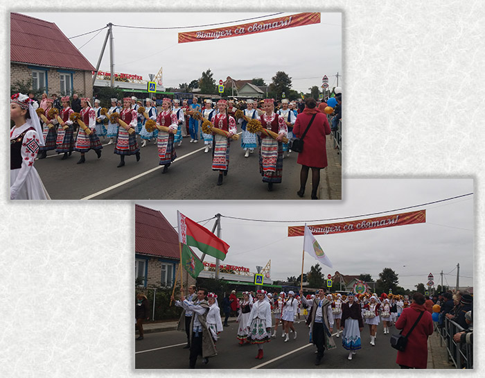
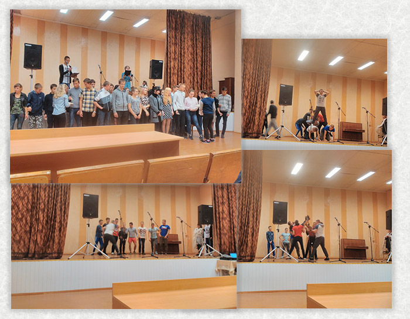

Воспитание и идеология
Календарь мероприятий 2017/2018
25.04.2018 - Матчевая встреча по волейболу среди команд:
ОВД Витебского райисполкома, учреждение образования "ВГПТК сельскохозяйственного производства", аграрный колледж учреждения образования "ВГАВМ"
21.04.2018 - Праздничное настроение и рабочая обстановка царили на территории колледжа и Октябрьского сельского совета. Работники колледжа приняли активное участие в благоустройстве и уборке территории во время субботника
На прошедшем в марте региональном этапе республиканского конкурса профессионального мастерства "III Национальный чемпионат WorldSkills Belarus 2018" учащийся колледжа Якутенко Владислав занял второе место в номинации "Эксплуатация сельскохозяйственных машин", Вероника Пархуткина - третье место в номинации "Кулинарное искусство".
19 апреля в концертном зале "Витебск" состоялась церемония награждения победителей и призеров конкурса, в которой принял участие губернатор области Н.Н. Шерстнёв.

14.04.2018 - День открытых дверей
7.03.2018 - Праздничный концерт "Для милых дам"
2.03.2018 - Наша экспозиция "Времена года" на Областной выставке декоративно-прикладного творчества
23.02.2018 - Сладкие сюрпризы для юношей в рамках профессиональной декады по специальности "Общественное питание"
17.02.2018 - День открытых дверей «Рабочие руки - родному краю»
16.02.2018 - Экскурсия в войсковой части 52287
15.02.2018 - "Афганистан... Дни ушедшие в вечность"

6.02.2018г. - Открытый диалог "Молодость. Безопасность. Будущее", в котором приняли участие "Белорусский республиканский сюоз молодежи" совместно с РОВД и РОЧС.
27.01.2018г. - Анализ учебно-воспитательной деятельности колледжа за 1-е полугодие учебного года. Совместное собрание выпускников и родителей по вопросу трудоустройства. Выступление учащихся с концертной программой.
25.01.2018г. - заседание по итогам первого полугодия 2017/2018 года с участием начальника ИДН Витебского РОВД Бордеева Р.В. и
помощника прокурора Витебского района Осипенко Е.В.
19.01.2018г. - Спортивный зимний фестиваль в рамках Всемирного Дня Снега
Новогодний балл 2017
Смотр-конкурс художественной самодеятельности "Таланты.by - 2017"
Декабрь 2017г. - Конкурс композиций "Новогодняя сказка"
20.12.17 Cостоялся новогодний турнир за кубок колледжа.
Учувствовали первая и вторая команды колледжа, команда УО «СШ п.Октябрьский», команда п. Октябрьский. I место заняла команда колледжа №1, II место – команда колледжа №2, III место – команда п. Октябрьский, 4 место –
команда УО «СШ п. Октябрьский». Поздравляем победителей и призеров соревнований!
15.12.2017г. - Областная выставка-презентация проектов республиканского конкурса "100 идей для Беларуси"

11.12.2017г. Учащиеся колледжа в октябре 2017 приняли участие в Республиканском экологическом мероприятии в рамках акции "Сделаем 2017" / "Зробiм 2017".
В период проведения акции ребята организовали сбор мусора на территории
аг. Октябрьская Витебского района (смотри фото в "Ленте новостей"
от 11.10.2017г.)
8 декабря 2017г. для учащихся колледжа организаторами Экологического мероприятия УО "Республиканский центр эколии и краеведения", учреждением "Центр экологических решений" и партнёром Экологического мероприятия "Кока-Кола Бевриджиз Белоруссия" была организована образовательная программа в Республиканском ландшафтном заказнике "Ельня"
Знакомство с экологическими тропами заказника

Экскурсия в визит-центр Государственного природоохранного учреждения "Ельня"

Обед на свежем воздухе, обеспеченный организаторами и партнёрами проведения Экологического мероприятия - просто класс!!!
С подарками от "Кока-Кола Бевриджиз Белоруссия" (партнёр мероприятия) возвращаемся домой!

УО "Республиканский центр экологии и краеведения" - спасибо!
Учреждение "Центр экологических решений" - спасибо!
УП "Кока-Кола Бевриджиз Белоруссия" - С П А С И Б О !
С Рождеством и Наступающим 2018 годом! Здоровья, мира, добра!
7.12.2017г. Тематическая дискотека "Безопасный Новый год"
22-23 ноября 2017г. прошел заключительный этап молодежной акции
"Диалог культур - единый мир" для учащихся учреждений профессионально-технического и среднего специального образования Республики Беларусь
22 ноября 2017г. прошла творческая встреча «Велик тот мир, который создал ты» поэта, критика, публициста Тамары Ивановны Красновой-Гусаченко с учащимися колледжа. Встреча прошла в теплой дружественной обстановке и затронула душу каждого присутствующего. Выражаем искренние слова благодарности Тамаре Ивановне, желаем новых творческих успехов и ждем новых встреч.
4.11.2017г. Торжественный митинг у мемориального камня коммуны им. Калинина,
посвященный 100-летию Октябрьской революции
Осенние улыбки наших милых МИСС ОСЕНЬ 2017
30.10.2017г. "Открытый микрофон" с помощником прокурора Витебской области
Осипенко Е.В. и сотрудником Витебского ОГВК Бородием А.А.
21.10.2017г. Городской субботник
12, 13 октября 2017г. Областной конкурс пахарей

18.10.2017г. Финальные соревнования первенства Области
по мини-футболу
среди УПТО команда нашего колледжа заняла II место
14.10.2017 Мы приняли активное участие в районном фестивале-ярмарке
тружеников Села "Дажынкi - 2017" в г.п. Яновичи
13.10.2017г. Выставка осенних композиций
"Нежной ласковой самой"
11.10.2017г. Мы приняли участие в Республиканском
экологическом мероприятии
в рамках акции "Сделаем 2017".
Место сбора мусора: прилегающая территория а.г. Октябрьская
7.10.2017г. Широкий ассортимент сельскохозяйственной продукции, кондитерских изделий, блины с пылу с жару, чай, кофе и наши улыбки на осенней ярмарке
3.10.2017г. Открытый диалог «Ценность жизни» в храме иконы Божией Матери
в рамках месячника «Жизнь прекрасна!»
Дожинки 2017 в г. Дубровно

Новых членов нашей дружной семьи встречали
веселым капустником "Привет! Первокурсник!"

2.09.2017г. Учреждение образования приняло участие в празднике, посвященном
500-летию белорусской письменности в г. Полоцке. Работала презентационная
выставка-продажа, посетили музей книгопечатания и Софийский собор.
1.09.2017г. Эккурсия на ООО "Витебск ТракСити" в рамках первого урока на тему:
«Научное творчество молодёжи сегодня –
успешное развитие и процветание Беларуси завтра»
1.09.2017г. Урок знаний в рамках первого урока на тему:
«Научное творчество молодёжи сегодня –
успешное развитие и процветание Беларуси завтра»
Торжественная линейка посвященная Дню знаний
1 сентября 2017 года